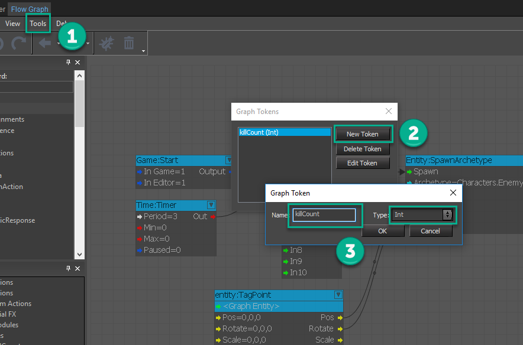
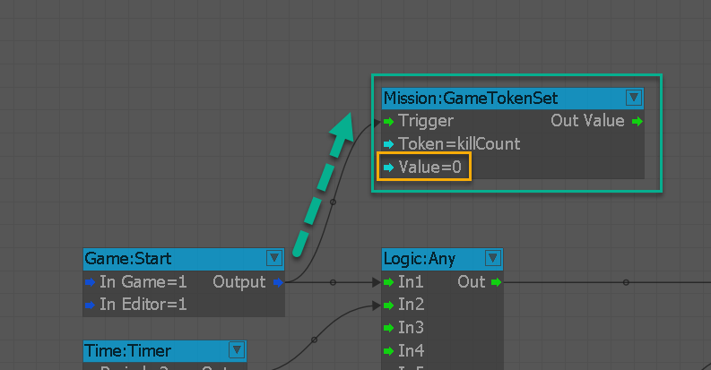
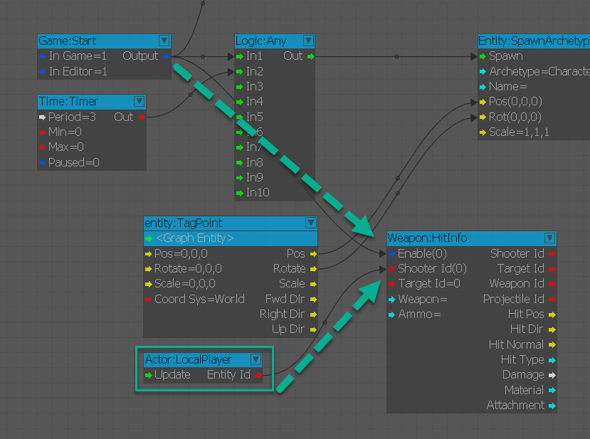
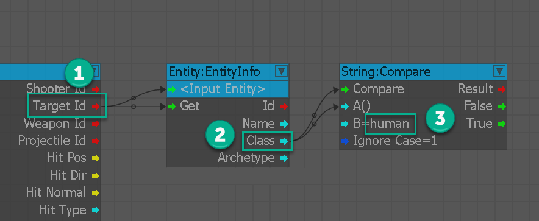
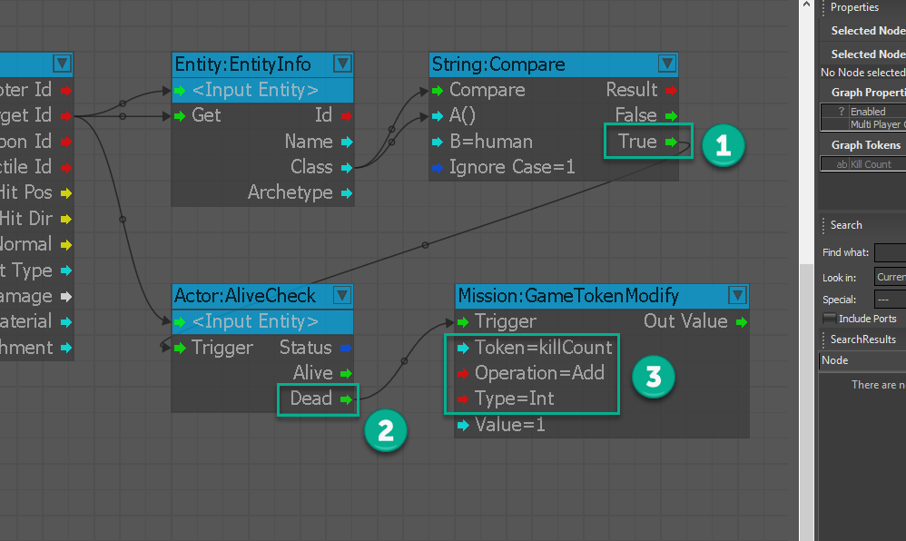
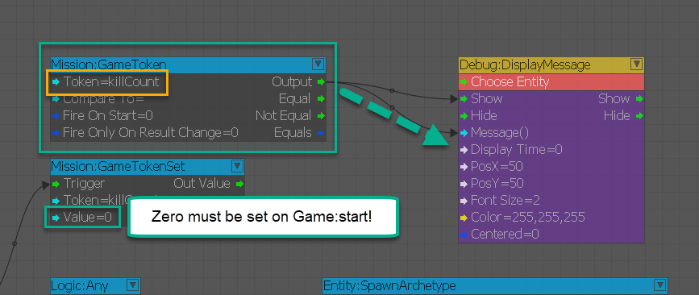
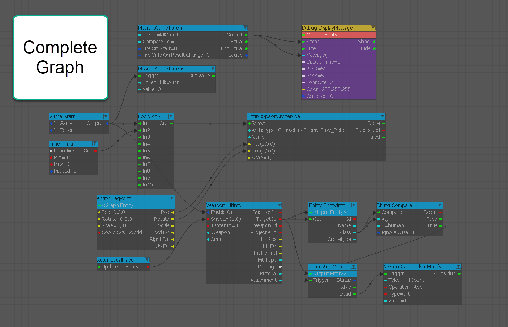
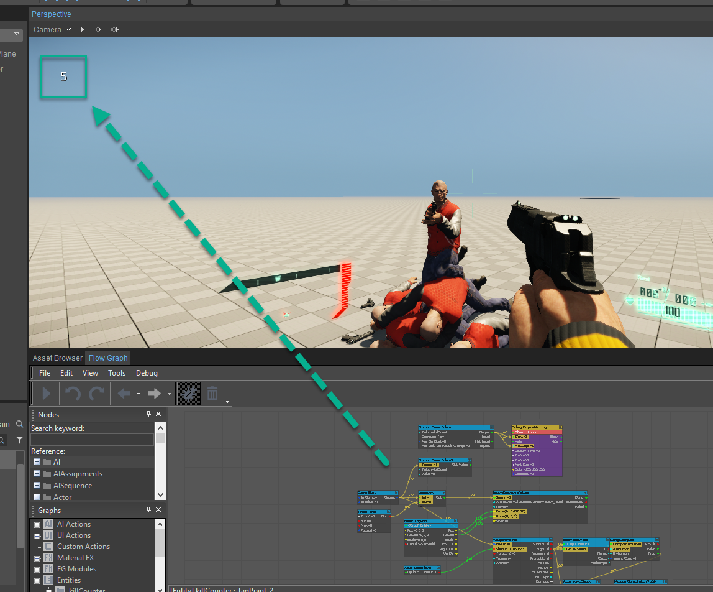

Когда и что я отслеживаю?
В этом разделе мы будем использовать базовый AI, который поставляется с пакетом GameSDK, и смерть этого AI в сцене для создания счетчика убийств, в котором мы будем увеличивать значение, а затем выводить его на экран. Логика довольно проста для понимания: нам нужно иметь возможность отслеживать Стрелка и затем передавать эту информацию счетчику. Этот счетчик проверит смерть объекта AI, а затем распечатает информацию на экране, как только значение станет 1.
В этом уроке также будет учтен класс сущности и показано, как можно отличить смерть от вождения или разделить логику фракций и способы вознаграждения игрока. Вы можете отслеживать это через информацию об оружии и передавать информацию о цели в проверку, которая проверяет, затрагивается ли класс людей. Если да, то вы увеличиваете переменную GameToken только тогда, когда она видит человека, а не Boid.
Как считать убийства
Вам необходимо выполнить следующие шаги, указанные ниже, чтобы отслеживать убийства врагов:
- Для этого урока требуется предыдущая глава 6 – Создание волн AI быть завершенным, чтобы продолжать.
- Добавить Графовый токен чтобы отслеживать количество убийств и выводить его на экран. Для начала нам нужно подняться в верхнюю часть инструмента Flow Graph и затем нажать Инструменты -> Редактировать токены графика... чтобы присвоить ему имя killCount и тип Int.
- Инициализируйте свой токен, создав Миссия:GameTokenSet узел и добавьте killCount токен в слот и назначьте начальный Значение быть Ноль.
- Добавить Оружие:HitInfo узел на графике, чтобы начать отслеживать количество убийств, происходящих со стороны игрока. Нам нужно будет соединить Игра:Начать вывод к входному порту Enable Оружие узел. Вместе с этим нам нужно будет подключить Actor:LocalPlayer узел к Идентификатор стрелка порт.
- Теперь логика стрелка определена, выведите целевую логику из Оружие:HitInfo узел (1). Чтобы этого избежать, создайте Сущность: EntityInfo узел для проверки Класс (2) разделить логику оценки и затем запустить Строка:Сравнить узел, чтобы увидеть, есть ли строка "человек" — это класс сущности (3).
- Теперь нам просто нужно проверить Живой состояние сущности и если она выводится из Мертвый (2), мы запустим Миссия:GameTokenModify узел, который имеет killCount токен, прикрепленный к Дополнение операция установлена на Целое число (3).
- Наконец, на этом этапе мы можем подключить Миссия:GameToken узел с количество убийств как Токен и Выход к Отладка DisplayMessage узел в Показать и Сообщение слоты.
Шаг 2

Шаг 3

Шаг 4

Шаг 5

Шаг 6

Шаг 7

Полный график

Окончательный результат
